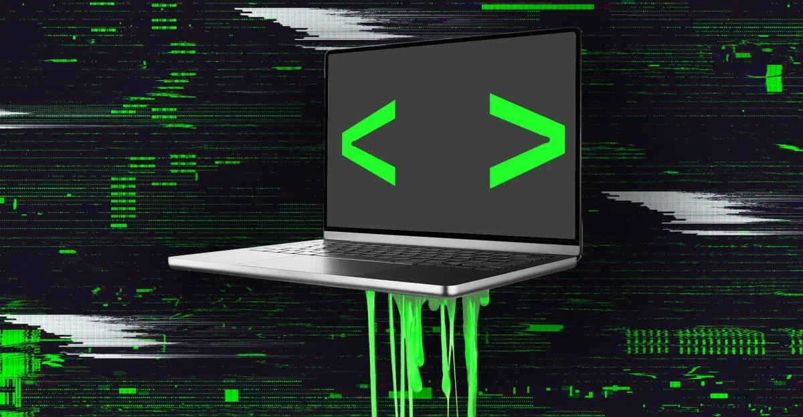
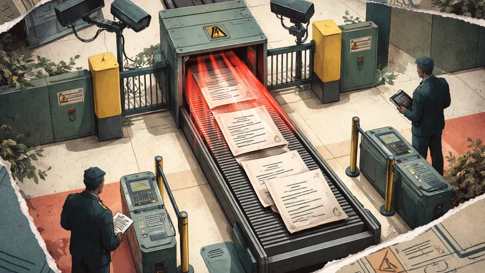
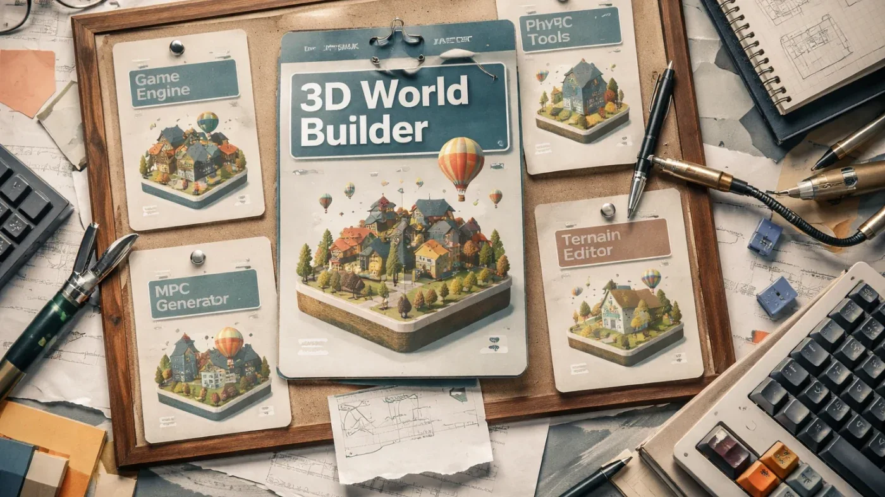
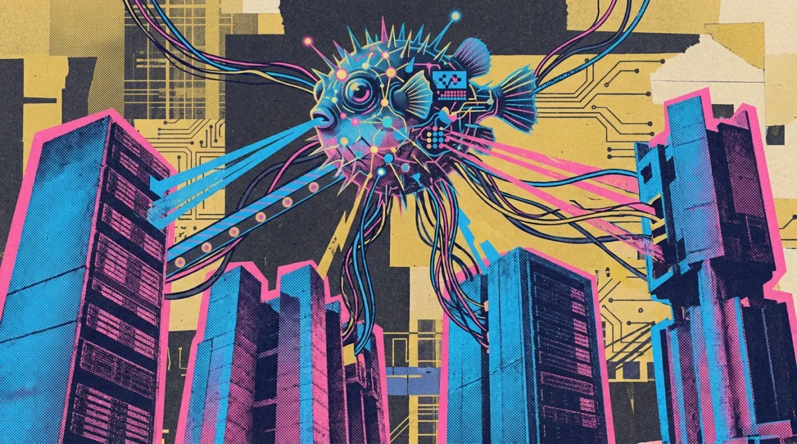
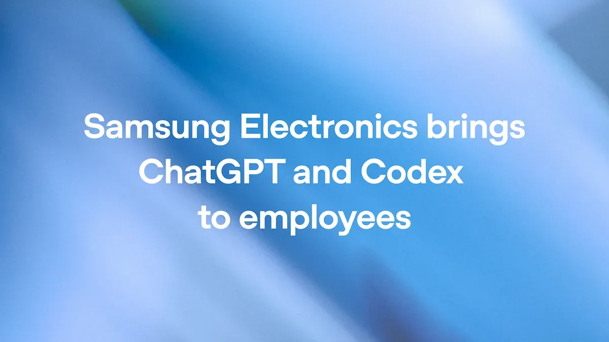
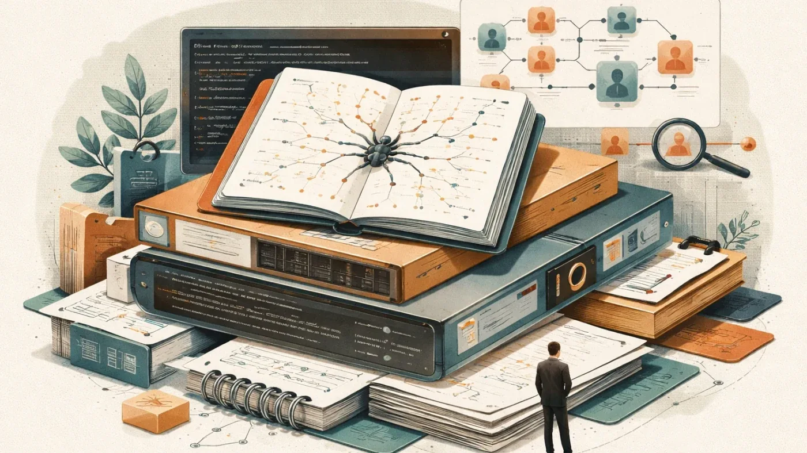

Индустрия
Vibe-кодинг: как любительские приложения на ИИ становятся брешью в безопасности
Проект-менеджер запустил сайт с помощью ИИ, а через месяцы обнаружил SQL-инъекцию. Это лишь одна из тысяч похожих историй.
The Verge AI
22 июн.Сохранённые материалы за этот день.
45 материалов

Проект-менеджер запустил сайт с помощью ИИ, а через месяцы обнаружил SQL-инъекцию. Это лишь одна из тысяч похожих историй.

Правительство сократило законопроект об ИИ до 13 статей, оставив поддержку только для моделей от 1 млрд параметров.
Генеративный ИИ в «Росгосстрахе»: анализ 100% звонков и сокращение времени диалога на 7%
Исследование Sitronics Group: половина сотрудников готова доверить секреты ИИ-ботам, а ущерб от киберпреступлений превысил 200 млрд руб.

80% компаний используют генеративный ИИ в разработке, но 40% считают риски критичными — исследование «Солар» и УЦСБ.
Автооценка вебинаров с LLM: пайплайн на Claude Code и whisper.cpp, правила работы с агентом и уроки для прода.
Автоматический подбор скиллов для Claude Code по контексту проекта
Как работает долговременная память ИИ: извлечение фактов, веса, забывание и проблемы с персональными данными

OpenAI тестирует GPT-5.6 Pro: генерация 3D-миров, симуляторов и автоматизация браузера из одного промпта.
Скорость vs безопасность: как вайб-кодерам не потерять данные и репутацию
Европейский seed-инвестор собрал $320 млн на поддержку посевных стартапов и достиг $1 млрд под управлением

Fugu от Sakana ИИ — оркестратор LLM, сравниваемый с Anthropic и снижающий зависимость от одного вендора

Samsung разворачивает ChatGPT Enterprise и Codex в Южной Корее

Samsung Electronics развертывает ChatGPT и Codex для всех сотрудников — крупнейшее корпоративное внедрение OpenAI.

Фреймворк с модификатором Doubter заставляет LLM меньше врать — и не требует переобучения базовой модели